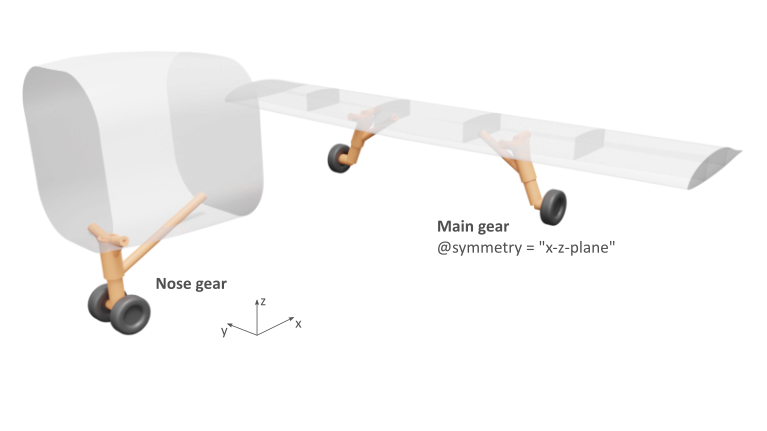

complexType · extension complexBaseType · sequence
Landing gear base
Base type for landing gears (i.e. nose gear, main gear and skid gear). An example of a nose and main gear is shown below:

| Name | Type | Constraints | Use | Default | Description |
|---|---|---|---|---|---|
@externalDataDirectory | xsd:string | optional | Directory of the external data file | ||
@externalDataNodePath | xsd:string | optional | Path of the node inside the external data file | ||
@externalFileName | xsd:string | optional | Name of the external data file | ||
@symmetry | symmetryXyXzYzType | 5 values | optional | Symmetry plane the component is mirrored at | |
@uID | xsd:ID | required | UID |
| Name | Type | Constraints | OccurrenceHow often the element may appear at this place. The schema writes it as minOccurs and maxOccurs on the declaration. | Default | Description |
|---|---|---|---|---|---|
| sequenceThe children below must appear in exactly this order. Each may repeat as often as its own occurrence allows. | |||||
name | stringBaseType | [0..1] optional | Name | ||
description | stringBaseType | [0..1] optional | Description | ||
parentUID | stringUIDBaseType | [0..1] optional | UID of the parent component. If set, the position of the main strut is defined relative to the parent coordinate system. | ||
control | landingGearControlType | [0..1] optional | Control parameters for retraction and extension | ||
| choiceExactly one of the alternatives below may appear, unless the occurrence next to this line says otherwise. | |||||
componentAssembly | landingGearComponentAssemblyType | [1..1] required | Components the landing gear is assembled from | ||
| sequenceThe children below must appear in exactly this order. Each may repeat as often as its own occurrence allows. | |||||
totalLength | doubleBaseType | [1..1] required | Total length of landing gear, equals the distance from the middle of the bogie/axles to the axis of rotation of the pintle strut. Distance is measured while landing gear is fully extended and in airborne condition (i.e., if a spring is present, the totalLength includes the springDeflectionLength) | ||
staticSuspensionTravel | doubleBaseType | [0..1] optional | Static suspension travel means the positive distance between the total length in airborne condition and the reduced length due to compression on the ground | ||
compressedSuspensionTravel | doubleBaseType | [0..1] optional | Compressed suspension travel means the positive distance between the total length in airborne condition and the maximum reduced length due to maximum compression on the ground (e.g., landing shock) | ||
transformation | transformationType | [1..1] required | Transformation with respect to the uppermost point of the main strut. From this point the landing gear is oriented in negative z-direction by default. | ||
cpacs/vehicles/aircraft/model/landingGears/landingGearcpacs/vehicles/rotorcraft/model/landingGear/noseGears/noseGearcpacs/vehicles/rotorcraft/model/landingGear/mainGears/mainGearcpacs/vehicles/rotorcraft/model/landingGear/skidGears/skidGear| Type | Name |
|---|---|
landingGearsType | landingGear |
mainGearsType | mainGear |
noseGearsType | noseGear |
skidGearsType | skidGear |